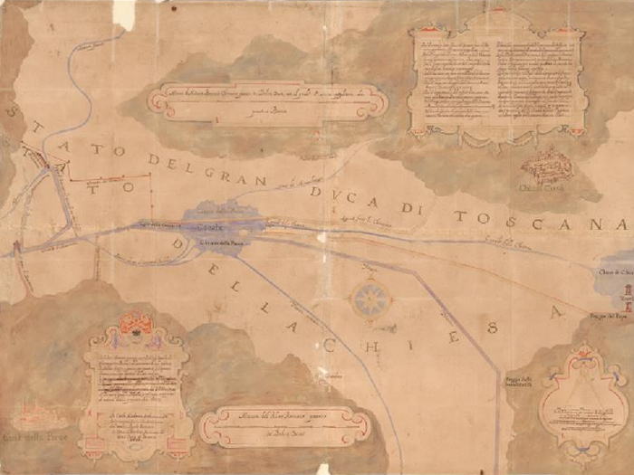

| Siamo lieti di offrire all’utente
l’inventario elaborato da Daniela Sinisi e dal gruppo di
lavoro da lei diretto nel corso di molti anni, arrivato a pubblicazione
nel CD allegato al volume Luoghi ritrovati. La Collezione I di
disegni e mappe dell'Archivio di Stato di Roma (secoli XVI-XIX).
Inventario, a cura di Daniela Sinisi, Roma, 2014, cui si rinvia.
Consapevoli che oggi non si possa prescindere da sistemi di accesso
digitale online per una diffusione del nostro lavoro che sia efficace
e sostenibile nel tempo, abbiamo operato per trasporre le descrizioni
pubblicate in pagine web rispettando al massimo l’autorialità
originaria.
Alle descrizione sono già associate le immagini ad alta
definizione ad oggi disponibili, ed altre si aggiungeranno
via via nel corso del tempo grazie alla attività quotidiana
del servizio fotografico dell’Archivio di Stato di Roma,
a nuove campagne di riproduzione, e all’intervento di benemeriti
sponsor.
Inventario: Daniela Sinisi
Elaborazione schede per l’inventario: Rachele Brumat, Margherita
Desideri, Valentina D’Innocenzi, Daniela Martino, Monica
Meccoli, Giovanna Montani, Francesco Russo, Luca Saletti
Elaborazione schede per il restauro: Maria Cristina Dioguardi
con la collaborazione di Luca Saletti e Francesco Russo
Indici: Valentina D’Innocenzi e Monica Meccoli (nomi di
persona); Rachele Brumat (nomi di luogo).
Apparati iconografici: Rachele Brumat
Abbreviazioni e Indici dei nomi e dei luoghi: Serena Dainotto
Base di dati originaria: Salvatore Miele, Gemma Pusceddu.
Reingegnerizzazione e classificazione topografica: Paolo Buonora;
consulenza: Luisa Falchi
|
|

Carlo Maderno, Girolamo Rainaldi, Pianta del Concordato coi toscani sulle Chiane, 1605 (Archivio di Stato di Roma, Collezione I disegni e piante, cart. 17, foglio173).
|